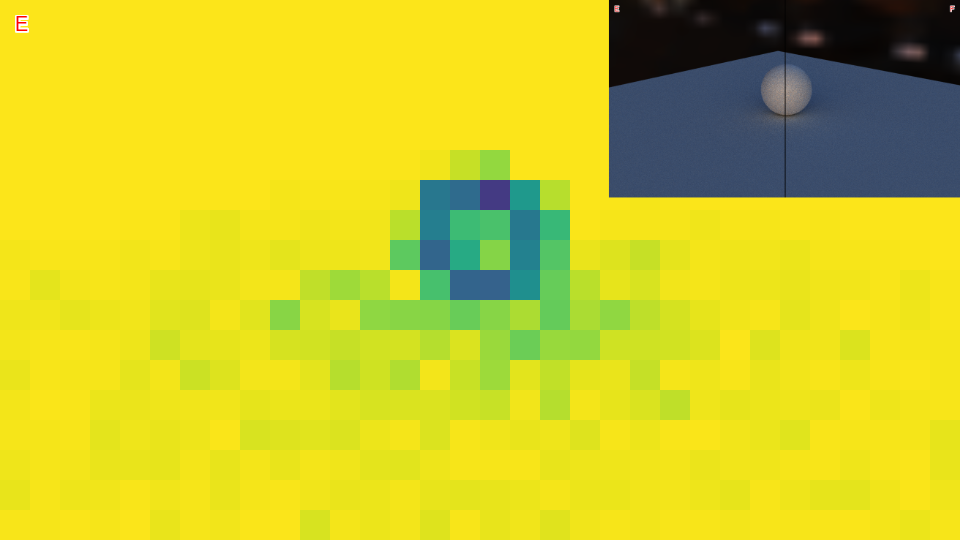

Left Image (Please drop your image here)
Right Image (Please drop your image here)
Direction
Free Direction
↘
↗
↖
↙
Border
2 px
Border Color
Labels
Font Size
20 px
Font Color
Floating Point Error
NaN
Infinity
Diff Mode
100 %
Click and Paste L↓
Click and Paste R↓
Loupe
150 px
200 %
Post Process
100 %
Gamma 1.0
Gamma 2.2
Gamma 2.4
Slice Graph
Welch (exr only)
Save
Github Repo
Welch Notes
Violet is danger area. But all Violet is won't necessarily mean wrong.
Uniform-distribution of p-value is good. but there are some exceptions on high match tile e.g. EnvMap. it could cause unbalanced distribution.
You could capture pretty faint errors like this ( metallic parameter 0.00 vs 0.01 )
